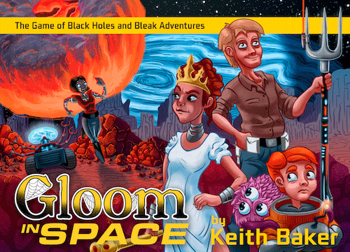

This week Board Crazy reviews Gloom in Space, a card game designed by Keith Baker and published by Atlas Games. In Gloom in Space, players try to become the gloomiest by killing off their characters … in space.

D reviews Gloom in Space
 (Author’s
note: this review is meant to accompany our gameplay video and will not
go in-depth on the game’s rules. If you’re interested in learning how
the game is played, please watch the video. It’s not bad.)
(Author’s
note: this review is meant to accompany our gameplay video and will not
go in-depth on the game’s rules. If you’re interested in learning how
the game is played, please watch the video. It’s not bad.)
The only one more brilliant and handsome than Captain Dutch English, is D
Alright, I think we’re going to keep this one brief. Gloom in Space is the newest follow-up to Keith Baker’s hit 2005 release, Gloom. This version, as the name implies, replaces the original game’s macabre Addams Family-esque setting and characters with familiar science fiction tropes and archetypes. When I saw this game at my local game store, I jumped at the chance to buy it because while I like Gloom, I like sci-fi even more and I figured this would be a good time. And it is. The core mechanics have not changed; players play cards to try and either make their opponents’ characters as happy as possible or make their own characters as miserable as possible. And when they think enough damage has been done, they kill their characters off. Storytelling and roleplaying is encouraged (and at my table, mandatory). These concepts were fun and different back then, and it turns out that they’re still fun all these years later.
I have some minor quibbles with the game. For starters, the game doesn’t delve terribly deep into its genre inspirations, which may be disappointing for some hardcore sci-fi fans. Most of the characters and cards are clearly influenced by Star Trek and Star Wars, with a handful of nods to series like Back to the Future or Doctor Who. This makes sense given those franchises’ popularity and breadth of lore, and it should make the game less prohibitively fun for your average player, but it would have been nice to see a wider array of references. Also, while Gloom in Space is a standalone release and not simply an expansion, I can’t imagine playing this with the same group of people too many times before it wears a little thin. There just aren’t enough cards to avoid seeing the same good ones over and over.
Fortunately, Gloom in Space is compatible with the original game and all other expansions and releases in the series. I haven’t tried it yet, but I imagine mixing and matching with the other versions would lead to some good times. How did Darius Dark (who is actually an android) wind up on a pleasure planet? I’m not sure, but I’m eager to find out. Its style may not be for everyone, but if you like the original Gloom, you will probably like Gloom in Space. If you like the original game and science fiction, then this is a no-brainer. Gloom in Space makes (fake) murder fun!
D’s Rating: Four Stars out of Five.
Will reviews Gloom in Space
The KHAAAAAN! Card. KHAN! Who will do it? Let’s find out!
 Simplicity
– I love it. Tabletop games sometimes take themselves too seriously,
which isn’t necessarily a bad thing. However, those kinds of games can
be a bore to play, especially with larger groups of players. Gloom in
Space is the opposite – it’s dumb fun that requires interaction and
imagination to be satisfying to play. That requirement is both the
strongest plus and weakest negative of this card game.
Simplicity
– I love it. Tabletop games sometimes take themselves too seriously,
which isn’t necessarily a bad thing. However, those kinds of games can
be a bore to play, especially with larger groups of players. Gloom in
Space is the opposite – it’s dumb fun that requires interaction and
imagination to be satisfying to play. That requirement is both the
strongest plus and weakest negative of this card game.
Before I get into the gameplay, I want to point out that the clear plastic cards that overlay onto one another is a really great idea, and it just looks very cool. The cards do slide a lot due to a lack of friction, but that’s a trivial complaint. I had never played a Gloom game, so the entire card system was refreshing to me.
Gameplay-wise, there isn’t much to critique, unless you struggle with improvisation. Basically, the point of the game is to make your characters as miserable as possible before you kill them. You want to do the opposite to your opponents. The idea that you’re supposed to hurt and annoy your own characters as much as possible is undoubtedly counterintuitive, but that’s what makes the game so funny. You play a card, make up a narrative to go with the text on the card, and repeat. Gloom in Space doesn’t require players to improvise and create stories as the game progresses, but it’s certainly encouraged. Without the hilarious (or serious, if you want) tales of your heroes, the game would be extremely bland – like unplayably bland. The freedom to make up these stories is the biggest strength of the game, but it’s also its greatest weakness. This is because the game relies too much on the players’ ingenuity and creativity. For some people, that’s not an issue, but for others, it definitely will be. Anyone considering purchasing this game should be aware of this fact before buying it.
Then again, complaining that Gloom in Space relies too much on the player isn’t exactly fair because the game itself does what it’s supposed to. The cards are entertaining and well-balanced, and the gameplay is simple and easy to learn. My friends and I had a blast playing Gloom in Space, and I would honestly play it again (or any other version of Gloom) in a heartbeat. There are few compliments I can pay that are better than that.
I give it an: A-
Graham reviews Gloom in Space
Your friendly neighborhood handyman, WD-40! This little robot can fix any and everything.
 I’m
finding it difficult to organize my thoughts on Gloom In Space – it’s a
very deep and complex game with lots of intricacies. Actually, I am
getting overwhelmed just thinking about all there is to this
game… okay, not really. Gloom In Space is obviously not a very complex
game and doesn’t really require all that many words to review it.
I’m
finding it difficult to organize my thoughts on Gloom In Space – it’s a
very deep and complex game with lots of intricacies. Actually, I am
getting overwhelmed just thinking about all there is to this
game… okay, not really. Gloom In Space is obviously not a very complex
game and doesn’t really require all that many words to review it.
I think my biggest criticism of Gloom In Space is that it takes too long (for our group) to play a single session. By the end of our game, I was very ready for it to be over. Other than that, this card game is a nice change of pace from the typical strategy heavy games that we typically play. It allows you to relax, practice improv, and stop worrying about the score. I had a lot of fun thinking up stories for the different characters, and I found it slightly depressing (in a good way) to kill off the characters. Because Gloom In Space is so laid back, some things that would typically bother me about a game didn’t really bother me all that much. For example, some cards are over-powered, but it didn’t really matter. In fact, I was actually excited to see those cards for the ludicrous stories that accompanied them. I also like the transparent aspect of the cards – it’s unique game-mechanic that works really well.
In the end, even though Gloom In Space isn’t typically the kind of game I like to play, it gets the job done, and I would play it again. I give Gloom in Space one thumb up.
Leave a Reply
You must be logged in to post a comment.